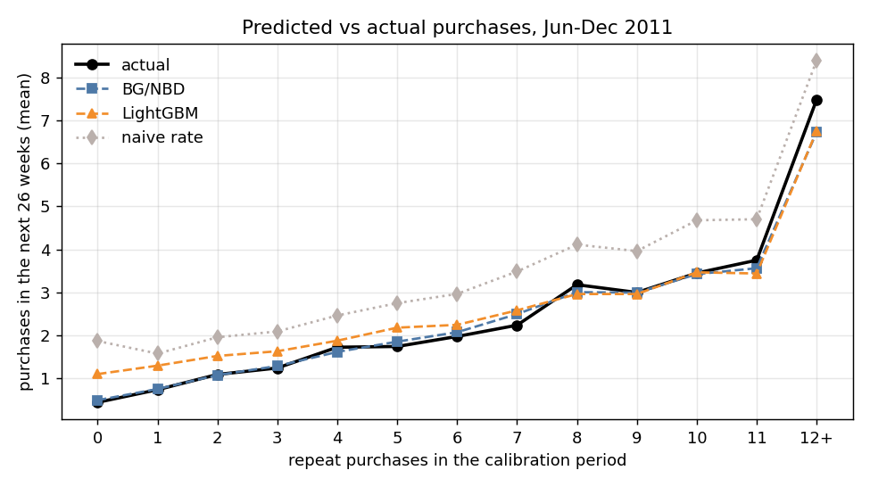
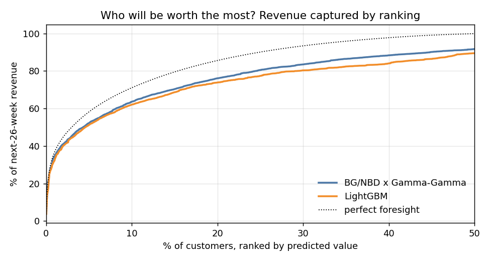
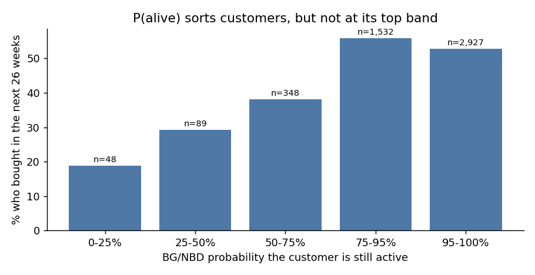
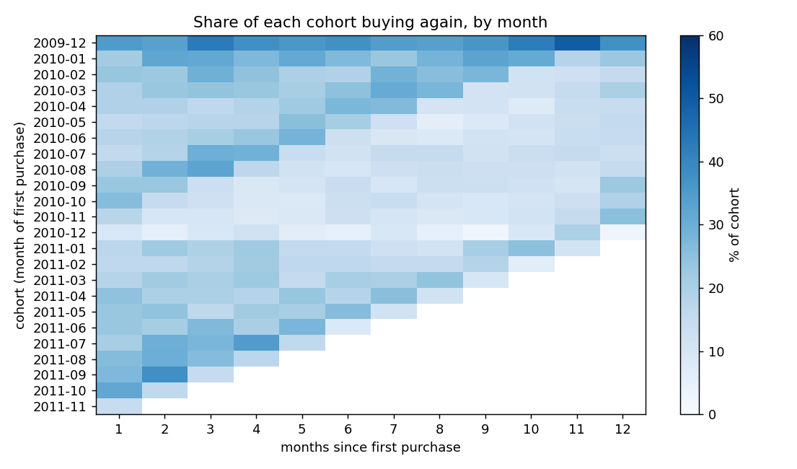

Two years of real transactions from a UK online wholesaler, 5,878 customers, the top 10% bringing 64% of revenue. Classic buy-till-you-die models, implemented from their likelihoods, predict each customer's next 26 weeks and are checked against what each customer actually did.
| Model | Total purchases error | MAE | Spearman | Revenue, top 10% |
|---|---|---|---|---|
| Naive past rate | +68% | 1.67 | 0.56 | 60% |
| LightGBM, fixed-window RFM | +24% | 1.26 | 0.53 | 62% |
| BG/NBD x Gamma-Gamma | -2% | 1.04 | 0.62 | 64% |

The machine-learning baseline first overshot by 151%: trained when the data was six months old and applied when it was eighteen, its lifetime-total features were far outside anything it had seen. Fixed 13- and 26-week windows fixed that. Revenue is still underestimated by 13% because the holdout contains Christmas and the models are stationary.


